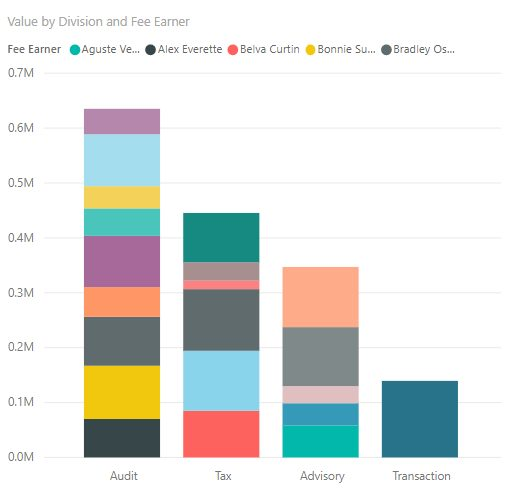
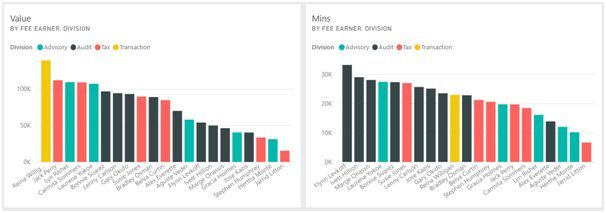
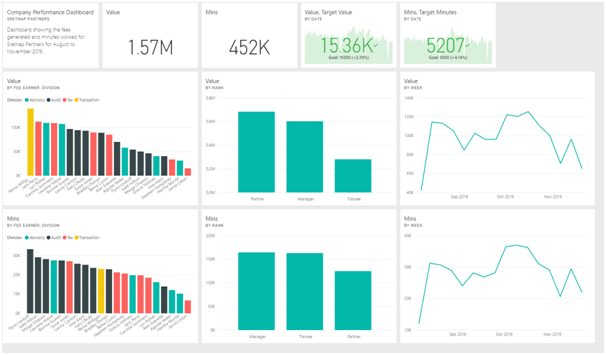

Over a number of previous posts (here, here and here), we have learned about business dashboards in detail. We have learned how to select the right charts to add to the dashboard, and we have learned how best to create the dashboard once you have selected the charts. What we have not yet covered is how to maximize the impact of individual charts.
For the final two posts in this series, we’ll see various chart design tips that can improve the impact of your charts. These tips should be helpful for anyone who either creates or views charts and dashboards.
1. Get Your Colors Right
Color is an important consideration in designing charts and dashboards. Adding color makes charts more visually appealing and allows you to explain things more effectively. However, too much color can cause confusion. Often a chart with a large amount of color is trying to display too much information.
As an example, consider the chart below, showing the total value generated by division and fee earner. Because fee earner is used as a legend, there are too many colors for this chart to be interpreted in any meaningful way. In this case, you should consider using a different chart type or a different color scheme.

If your charts use a color legend, then ensure that the colors are consistent. For example, below we see two of the charts from the dashboard in the previous lesson. These show the total value generated by fee earner and division, and the total minutes worked by fee earner and division. As you can see, the color coding for each division is the same on both charts.

Generally, if you use software like Power BI or Tableau, this will be done automatically. However, if you use a less advanced tool, or if you apply a manual or custom color scheme, then this could be something you need to watch out for.
2. Always Review Your Charts
In previous posts we’ve mentioned that the primary focus of a chart is on communicating a message in a visual way. Many people lose track of this though, and create charts as if their primary purpose was to look nice. Obviously, you should not be afraid to try different or unusual chart types, but always ask yourself are you getting the right message across.
One good way of checking whether a chart or dashboard is effectively communicating its message is to show it to someone else. Because charts and dashboards are designed to be read at a glance, another user should be able to identify the chart’s insight quickly. If they can’t, then the charts may be over-complicated or wrong for the relevant situation. Because this task takes place at a glance, it is something that even time-poor managers could contribute to.
In the case of Srentrap Partners, the dashboard would be created by the analysts in the consulting division. The managers could quickly glance at the first version of the dashboard, and identify if all the insights that the executives would need are present. This could then provoke changes to help create the final version of the dashboard.
3. Make Sure Your Audience Understand Key Terms
As we have discussed, the charts in a dashboard should be easy to understand at a glance. However, this does not just include the data. You should make sure the audience will understand any words or acronyms that are used in the dashboard and its charts.
Many organisations live in a parallel universe filled with acronyms, codes and words that have different meanings to their regular meanings in the real world. If you work in one such company, you should make sure that all the people who will use the dashboard understand any terms you use on it.
For example, the charts on the dashboard we saw previously refer to Value and Minutes. Here, “Value” refers to the total amount charged to clients as a result of consulting activities, while “Minutes” refers to the number of minutes spent on those activities. Notably, “Minutes” does not refer to the total number of minutes worked, which may also include non-consulting activities. As the dashboard is being created for internal use this is not a problem, but if it was being distributed externally, this convention may need to be explained explicitly.
4. Don’t Forget About Unspoken Conventions
When creating charts, there are actually numerous conventions that everyone tends to stick to. Often these conventions are unspoken, but if broken they can have a big impact on the chart. For example, it’s generally understood that when a chart deals with numeric data, the numbers increase from left to right on the x-axis and from bottom to top on the y-axis. Inverting either of these axes, whether accidentally or maliciously, could lead people to the exact opposite conclusion to the one the chart actually shows.
Sometimes there will be reasons why you might prefer to ignore these conventions. For example if your chart ranks people by sales value, then the lowest ranking would be the best. As a result, you might want to invert the axis in this case.
If your chart does have some sort of unusual quality, then you should carefully consider if breaking a convention would impact on people’s ability to understand the chart. If someone else is reviewing your charts or dashboards, then they can provide a valuable insight into whether they can easily be understood.
Again, this is something that is usually dealt with automatically with the right software, but it’s a principle you should still bear in mind.
5. Provide Continuity and Context
As we have discussed previously, dashboards should be structured in a logical manner. The most important figures should be placed towards the top, with supporting information below. The dashboard should also “read” in a logical way. However, we didn’t mention the idea of continuity. Generally, a dashboard should focus on a small number of different areas, and should not jump.

Above, we see the dashboard created for the consulting company. This dashboard focuses on two metrics: value generated and minutes worked. The headline figures focus on both these metrics, and the visuals below focus on Value, then Minutes. In this way, there is a continuity to the dashboard, and the charts provide some context to the figures at the top of the dashboard.
If the headline figures related only to value, and the charts related only to minutes, then the dashboard would be more confusing and less effective.
Conclusion
In this post, we have seen several tips that can improve the impact of charts and by extension dashboards. Whether you create charts yourself or study charts created by other people, these tips will let you better understand the factors that make charts effective.
In an upcoming post in this series, we’ll provide a few more tips to use when designing charts and we’ll conclude this series by summarizing what we’ve learned.